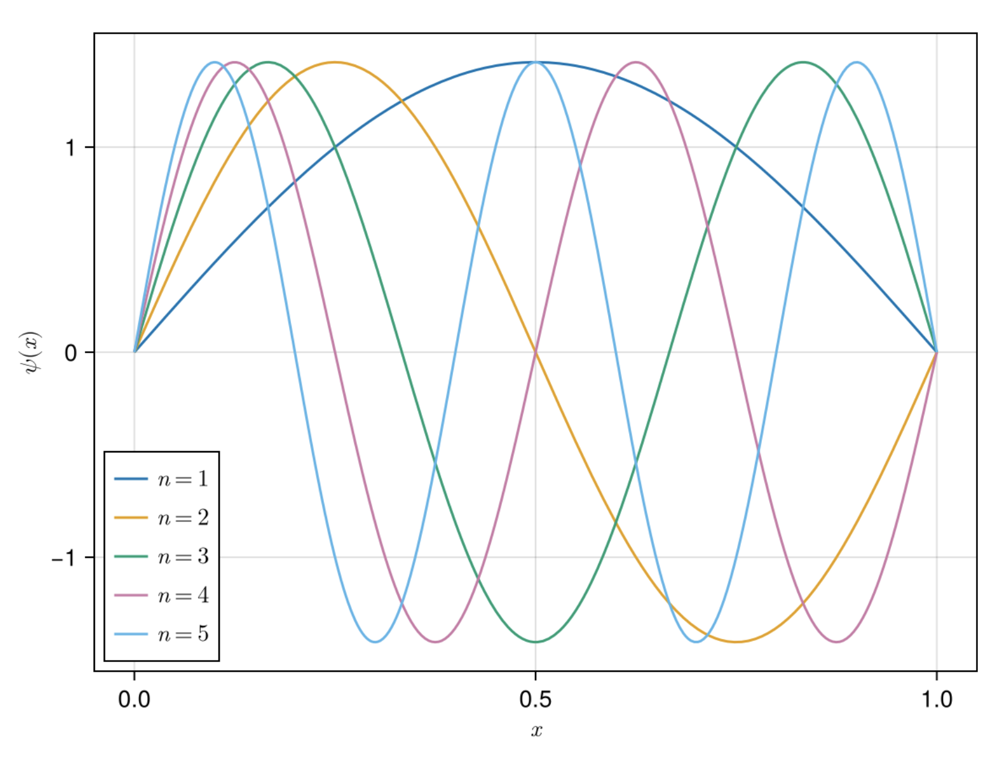
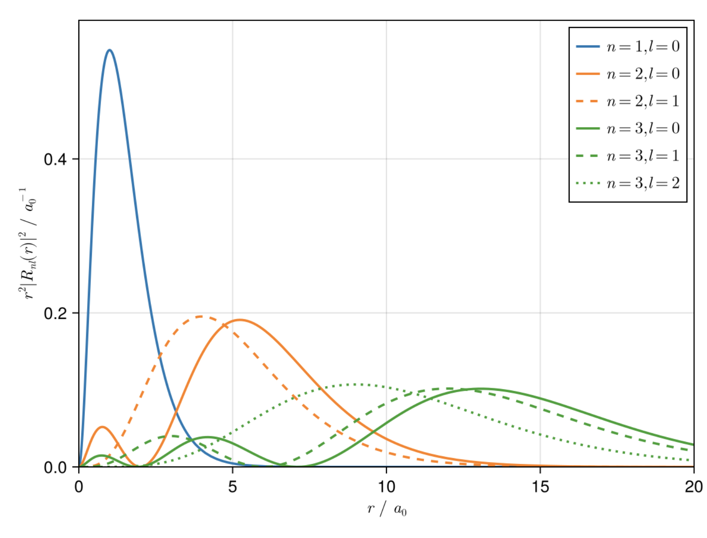
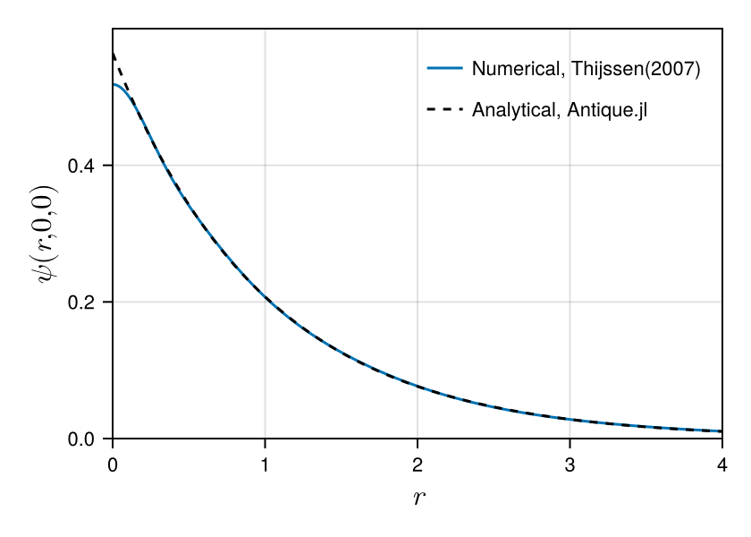

Antique.jl


Antique.jl provides self-contained, well-tested, and well-documented implementations of analytical solutions to solvable quantum mechanical models. Analytical solutions are the most reliable benchmarks for software testing in the development of numerical methods. In addition to testing numerical methods, this package is useful for teaching quantum mechanics. We aim to support researchers, lecturers, students, and any person who is interested in quantum mechanics.
Install
Run the following code on the REPL to install this package.
]add Antique@0.12.0Or run import Pkg; Pkg.add(; name="Antique", version="0.12.0") to install on Jupyter Notebook. The version of this package can be found at ]status Antique or import Pkg; Pkg.status("Antique").
Usage & Examples
Install Antique.jl for the first use and run using Antique before each use.
using AntiqueThe energy E(), the wave function ψ(), the potential V() and some other functions will be exported. There are two ways to avoid function name conflicts. Run import Antique instead of using Antique, and use the energy Antique.E(), the wave function Antique.ψ() and the potential Antique.V(). In the current version, one can access the Greek letters in the section Greek Letters and Symbols. Or try giving other function names like using Antique: V as potential, E as energy, ψ as wavefuntion, HydrogenAtom. Here we show two examples: (1) the infinite potential well, and (2) the hydrogen-like atom. There are more examples on each model page.
(1) the infinite potential well
First, we demonstrate one of the simplest models: the infinite potential well. We choose InfinitePotentialWell as the model. Then, we specify the model parameters as follows:
IPW = InfinitePotentialWell(L=1.0, m=1.0, ℏ=1.0)We can access each parameter as follows:
IPW.L
# output> 1.0
IPW.m
# output> 1.0
IPW.ℏ
# output> 1.0The eigenvalues
\[E_n = \frac{\hbar^2 n^2 \pi^2}{2 m L^2}\]
can be computed as follows:
E(IPW, n=1)
# output> 4.934802200544679
E(IPW, n=2)
# output> 19.739208802178716One of the important features is the wave function
\[\psi_n(x) = \sqrt{\frac{2}{L}} \sin \frac{n\pi x}{L}\]
for different values of n and position x. We can plot the wave function as follows:
using CairoMakie
# settings
f = Figure()
ax = Axis(f[1,1], xlabel=L"$x$", ylabel=L"$\psi(x)$")
# plot
w1 = lines!(ax, 0..1, x -> ψ(IPW, x, n=1))
w2 = lines!(ax, 0..1, x -> ψ(IPW, x, n=2))
w3 = lines!(ax, 0..1, x -> ψ(IPW, x, n=3))
w4 = lines!(ax, 0..1, x -> ψ(IPW, x, n=4))
w5 = lines!(ax, 0..1, x -> ψ(IPW, x, n=5))
# legend
axislegend(ax, [w1, w2, w3, w4, w5], [L"n=1", L"n=2", L"n=3", L"n=4", L"n=5"], position=:lb)
f
(2) the hydrogen-like atom
For the hydrogen atom, one need to choose HydrogenAtom model and the parameters can be set as
H = HydrogenAtom(Z=1, mₑ=1.0, a₀=1.0, Eₕ=1.0, ℏ=1.0)Or you can simply use
H = HydrogenAtom(Z=1)The the other parameters use default value. The Hydrogen atom has the symbol $\mathrm{H}$ and atomic number 1 ($Z=1$).
The analytical notation of the energy (the eigen value of the Hamiltonian) is written as
\[E_n = -\frac{Z^2}{2n^2} E_\mathrm{h}.\]
Therefore the ground state ($n=1$) energy is $-\frac{1}{2} E_\mathrm{h}$.
E(H, n=1)
# output> -0.5The Helium cation has the symbol $\mathrm{He}^+$ and atomic number 2 ($Z=2$). Therefore the ground state ($n=1$) energy is $-2 E_\mathrm{h}$.
He⁺ = HydrogenAtom(Z=2)
E(He⁺, n=1)
# output> -2.0One important application is plotting the radial wave function of the hydrogen atom:
\[R_{nl}(r) = -\sqrt{\frac{(n-l-1)!}{2n(n+l)!} \left(\frac{2Z}{n a_0}\right)^3} \left(\frac{2Zr}{n a_0}\right)^l \exp \left(-\frac{Zr}{n a_0}\right) L_{n+l}^{2l+1} \left(\frac{2Zr}{n a_0}\right)\]
Details of this formula can be found on the HydrogenAtom model page. We can plot the radial probability density for several states using the following code:
using CairoMakie
using LaTeXStrings
# setting
f = Figure()
ax = Axis(f[1,1], xlabel=L"$r~/~a_0$", ylabel=L"$r^2|R_{nl}(r)|^2~/~a_0^{-1}$", limits=(0,20,0,0.58))
# plot
ws = []
ls = []
for n in 1:3
for l in 0:n-1
w = lines!(
ax,
0..20,
r -> r^2 * Antique.R(H,r,n=n,l=l)^2,
linewidth = 2,
linestyle = [:solid,:dash,:dot,:dashdot,:dashdotdot][l+1],
color = n,
colormap = :tab10,
colorrange = (1,10)
)
push!(ws, w)
push!(ls, latexstring("n=$n, l=$l"))
end
end
# legend
axislegend(ax, ws, ls, position=:rt)
f
Greek Letters and Symbols
This section lists the Greek letters and symbols used in various models in this package. These symbols are sometimes not easily accessible, so we provide them here for convenience. You may copy them as needed to call the relevant functions or quantities.
| Symbol | Meaning |
|---|---|
| E | Energy |
| V | Potential |
| ψ | Wave function |
| ℏ | Planck constant |
| Eₕ | Hartree energy |
| λ | Potential strength |
| α | Potential strength / Exponent in generalized Laguerre polynomial |
| m | Particle mass / z-component of angular momentum (l) |
| m₁ | Mass of particle 1 |
| m₂ | Mass of particle 2 |
| mₑ | Electron mass |
| µ | Reduced mass |
| Dₑ | Well depth |
| L | Length of the box / Laguerre polynomial |
| l | Angular momentum quantum number |
| θ | Polar angle |
| φ | Azimuthal angle |
| k | Force constant / Exponent in associated Laguerre polynomial |
| n | Excitation level |
| nₘₐₓ | Maximum excitation level |
| Y | Spherical harmonics |
| P | Legendre polynomial |
| x | Position |
| x₀ | Characteristic length or dimension |
| r | Position vector |
| rₑ | Equilibrium bond distance |
| a₀ | Bohr radius |
| R | Distance |
| Z | Atomic number |
| z₁ | Charge of particle 1 |
| z₂ | Charge of particle 2 |
Supported Models


- Delta Potential
DeltaPotential - Infinite Potential Well
InfinitePotentialWell - Harmonic Oscillator
HarmonicOscillator - PoschlTeller
PoschlTeller - Morse Potential
MorsePotential - Rigid Rotor
RigidRotor - Infinite PotentialWell 3D
InfinitePotentialWell3D - Spherical Oscillator
SphericalOscillator - Hydrogen Atom
HydrogenAtom - Coulomb 2-Body System
CoulombTwoBody
Demonstration
This is an example of a variational calculation for the hydrogen atom based on Thijssen(2007). We check the accuracy of the numerical solution by comparison with the analytical solution. Comparing wave functions can be difficult, but Antique.jl makes it easy. You can extend it to excited states ($n>1$) as well as the ground state ($n=1$). Thus, Antique.jl is useful for testing numerical methods. We hope many numerical methods to be developed using Antique.jl.
# calculations based on Thijssen(2007) https://doi.org/10.1017/CBO9781139171397
using LinearAlgebra
α = [13.00773, 1.962079, 0.444529, 0.1219492]
nₘₐₓ = length(α)
S = [(pi/(α[i]+α[j]))^(3/2) for i=1:nₘₐₓ, j=1:nₘₐₓ]
H = [3*pi^(3/2)*α[i]*α[j]/(α[i]+α[j])^(5/2) - 2*pi/(α[i]+α[j]) for i=1:nₘₐₓ, j=1:nₘₐₓ]
E, C = eigen(Symmetric(H),Symmetric(S))
# norm & energy
import Antique
HA = Antique.HydrogenAtom(Z=1, Eₕ=1.0, a₀=1.0, mₑ=1.0, ℏ=1.0)
println("Norm")
println(" numerical : ", transpose(C[:,1]) * S * C[:,1])
println(" analytical: ", 1)
println("Energy")
println(" numerical : ", E[1])
println(" analytical: ", Antique.E(HA,n=1))
# wave function
using CairoMakie
fig = Figure(size=(420,300), fontsize=11, backgroundcolor=:transparent)
axis = Axis(fig[1,1], xlabel=L"$r$", ylabel=L"$\psi(r,0,0)$", limits=(0,4,0,0.6), ylabelsize=16.5, xlabelsize=16.5)
lines!(axis, 0:0.01:10, r -> sum(C[:,1] .* exp.(-α*r^2)), label="Numerical, Thijssen(2007)")
lines!(axis, 0:0.01:10, r -> real(Antique.ψ(HA,r,0,0)), color=:black, linestyle=:dash, label="Analytical, Antique.jl")
axislegend(axis, position=:rt, framevisible=false)
figNorm
numerical : 0.9999999999999998
analytical: 1
Energy
numerical : -0.4992784056674876
analytical: -0.5
Future Works
The candidate models are listed on the Wikipedia page of List of quantum-mechanical systems with analytical solutions. Please submit your requests and suggestions as issues on GitHub.
Developer's Guide
Here is the guideline for adding new models.
Acknowledgment
Thanks to all contributors. This package was named by @KB-satou and @ultimatile. @MartinMikkelsen contributed to writing docstrings. Special thanks to @hyrodium for his help with managing the documentation and advice on coding style. @lhapp27 implemented 2 models, and @ajarifi implemented 3 models.